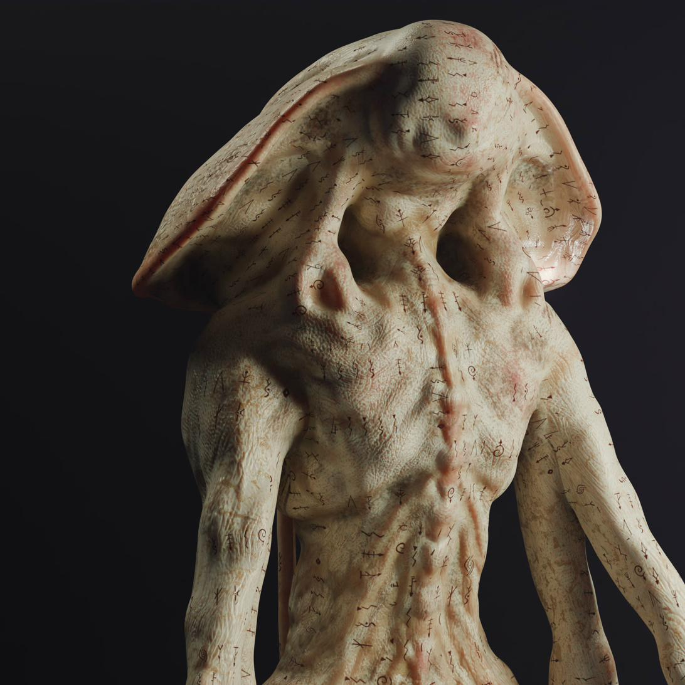
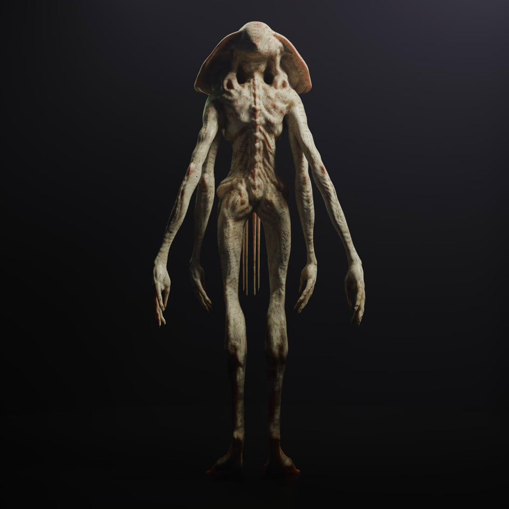
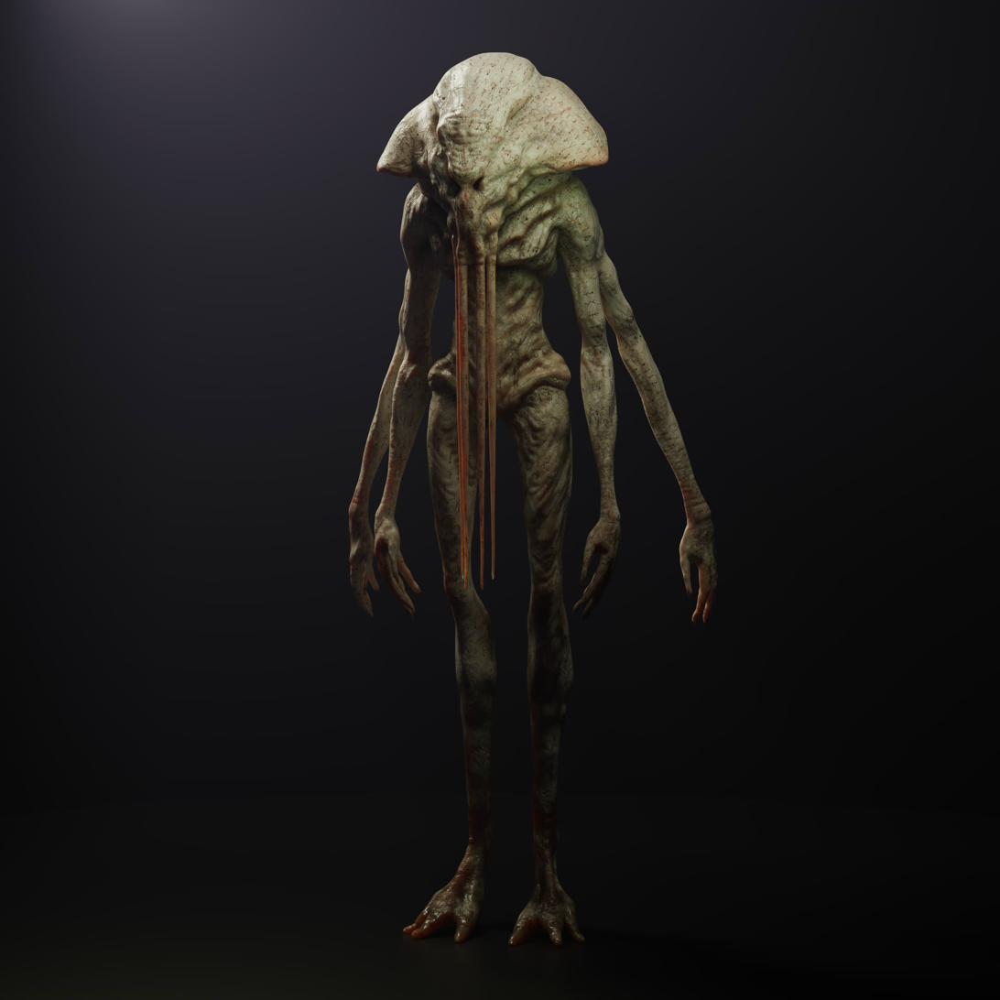
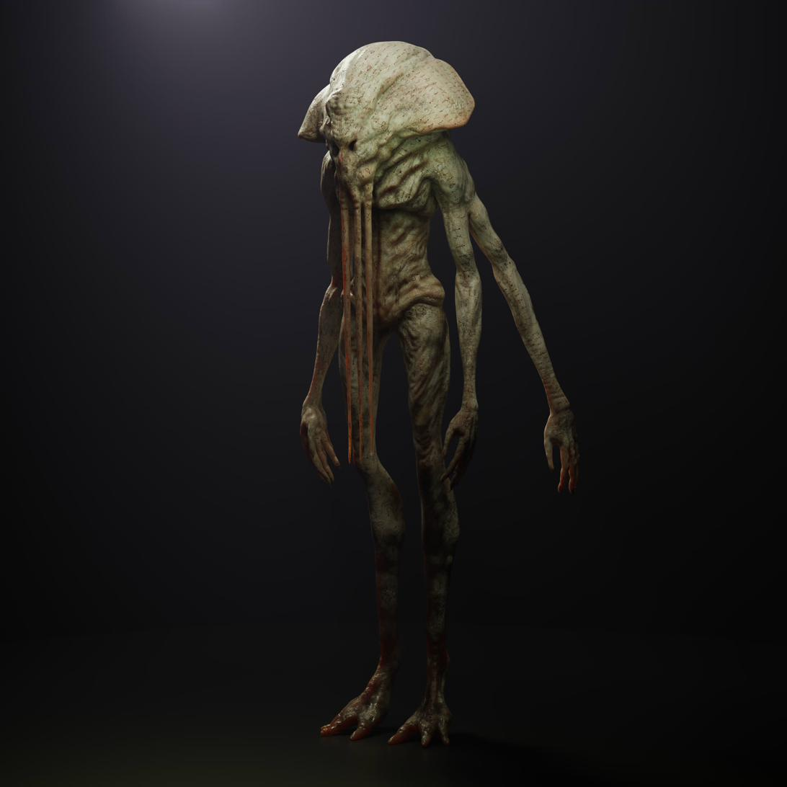
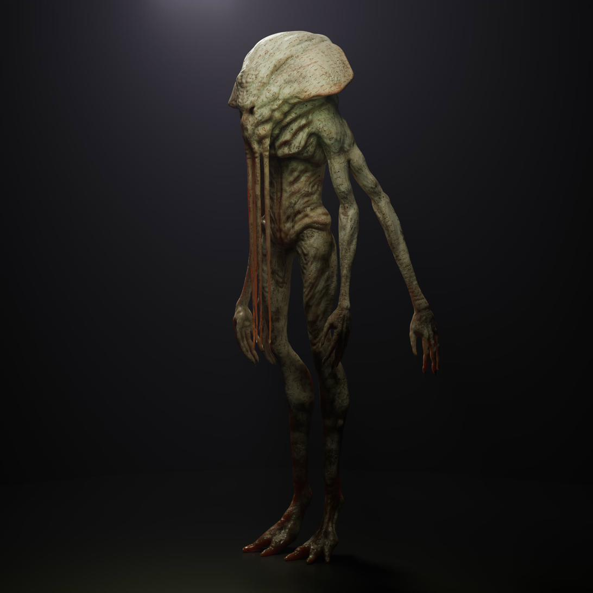
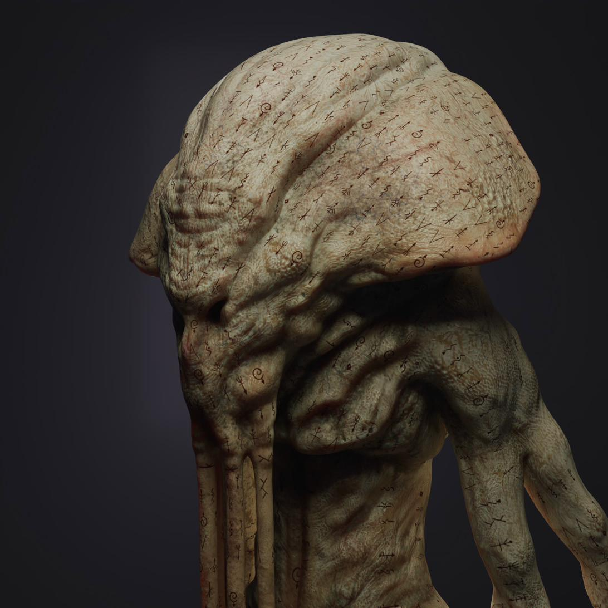
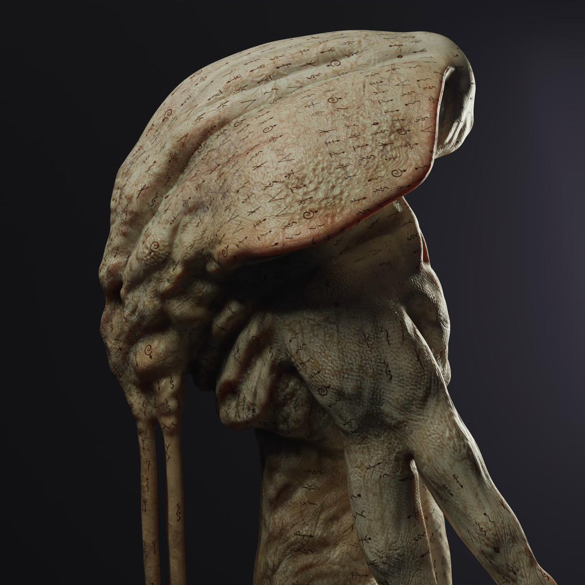

Une relecture personnelle de Cthulhu conçue pour le court-métrage Bellow Challenger Deep. La créature est pensée pour donner une impression colossale — à l'échelle d'une ville engloutie — tout en étant principalement vue par fragments : silhouettes, masses dans l'obscurité, aperçus de peau et de tentacules avant toute révélation complète.
L'objectif n'est pas de tout montrer dans un seul plan lisible, mais de laisser l'imagination travailler à partir de quelques images fortes et dérangeantes. Textures organiques presque minérales, reflets métalliques sous l'eau, sensation d'une masse vivante colossale.





